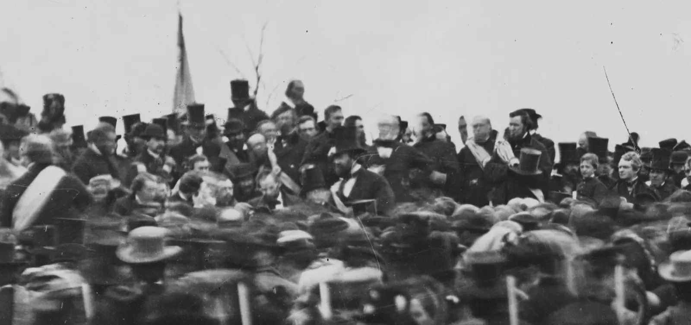
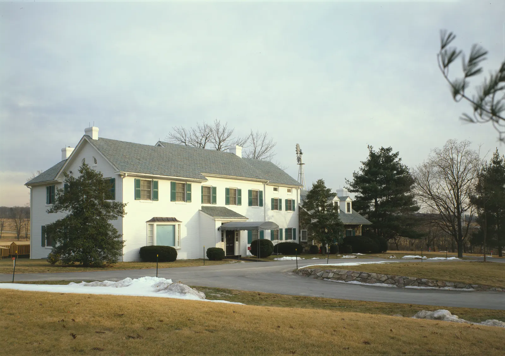
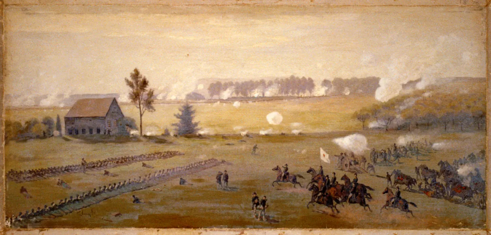
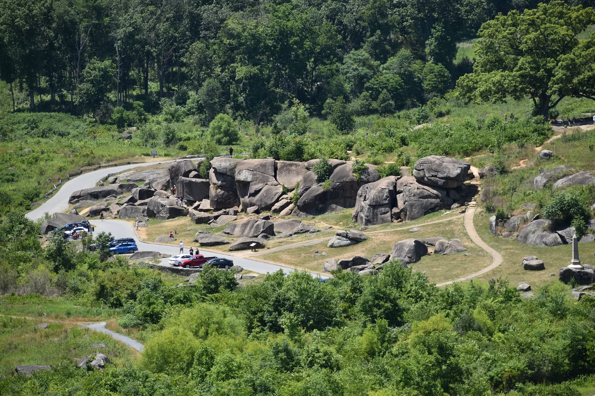
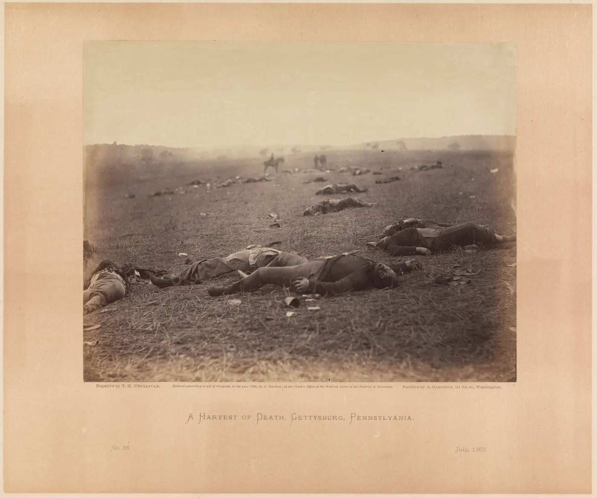
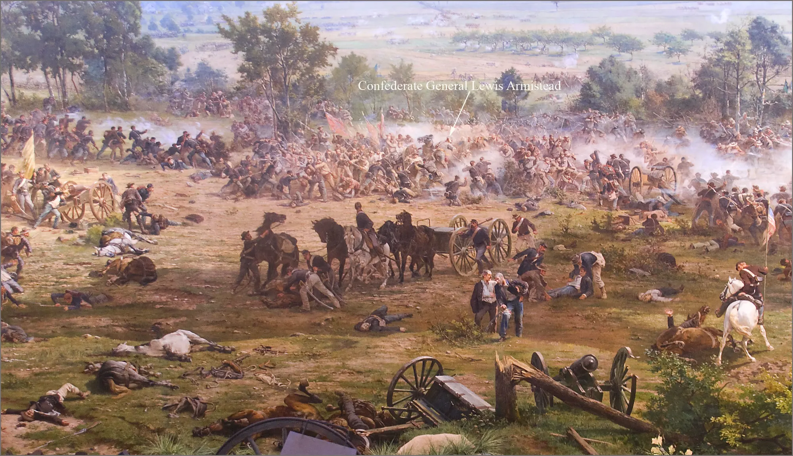

An Unexpectedly Immersive Afternoon
Yesterday, I spent almost an entire afternoon in Gettysburg, Pennsylvania, one of the most historically significant towns in the United States. And honestly, it exceeded my expectations.
I got to the visitor center just before noon. At the ticket counter, I had the feeling the staff expected a quick visit. Maybe, seeing a Chinese visitor, they weren’t sure how much I’d care about Civil War history, or how much I’d get out of exhibits in English. But I had something different in mind. I told them I wanted a good long stretch in the museum before the battlefield bus tour. So we booked the tour for around three, which gave me about three hours inside. And as it turned out, three hours was barely enough.
What made it so rewarding wasn’t just the amount of information. It was the chance to immerse myself in one moment of American history entirely through the English language. I kept noticing how the exhibits were written, how the context was set up, and how those three extraordinary days in July 1863 were woven into one coherent story.
For me, this was more than a history lesson. It connected language, geography, and history in a remarkably vivid setting. And I knew that unless I put my thoughts into words afterward, most of it would fade. So here’s my attempt to hold on to it while it’s still fresh.
A Town, a Speech, and a Farm
Let me start with the battlefield tour, because that’s what I remember most vividly. It lasted about two hours. We drove north from the visitor center, through the town itself, and then around the battlefield. One of the first things I learned is that the town sits in a kind of bowl, and that surrounding terrain shaped the fighting.
What surprised me is that despite the scale of the battle, only one civilian is known to have been killed by gunfire. Her name was Jennie Wade.1 She was staying with her sister, who had just given birth, when a stray bullet hit her. It’s a tragic story. But think about it. Roughly 51,000 military casualties in three days,2 and only one civilian shot dead. That’s extraordinary.
We also passed the railroad station tied to Abraham Lincoln’s visit in November 1863. A few months after the battle, he came to dedicate the Soldiers’ National Cemetery, and that’s where he delivered the Gettysburg Address. What struck me is how short it was. About two minutes. Two minutes. And yet those few paragraphs became some of the most enduring words in American political history.3

Photographer uncertain (attributed variously to David Bachrach and others). National Archives / Library of Congress. Public domain. Source
I even remembered an interview decades later with Mike Wallace, where a Chinese leader recited lines from that speech.4 I love moments like that, when events that felt isolated in my memory suddenly become part of a much bigger landscape.
We passed Culp’s Hill, Cemetery Hill, and the long line along Cemetery Ridge. I knew the outline of the battle before I came, but seeing the terrain, I finally understood why those hills mattered so much.
We also passed Lee’s Headquarters and the farm once owned by Dwight Eisenhower, another unexpected connection. He commanded a tank training camp here in the First World War, and decades later, after leading the Allies in Europe and becoming president, he came back and made Gettysburg his retirement home. Which left me with an amusing question: if he already had such a beautiful farm here, why did he need another retreat in the mountains?5

Understanding the Battle Through Its Terrain
Then we turned to the battle itself. On July 1st, Confederate forces gained the upper hand and drove the Union troops back through the town, but they regrouped on the high ground to the south, and those positions shaped the next two days. And this is where geography becomes everything.

On the second day, Lee tried to hit the Union flank at the southern end of the line. Confederate troops had to move through fields and woods, trying to hide their approach. Our guide told us that even the dust from marching soldiers could give them away.
One of our stops was the Peach Orchard. Standing there, I found it hard to imagine what that ground looked like during the fighting. Thousands of men became casualties around the orchard, the Wheatfield, and Devil’s Den. When you hear “thousands of casualties,” it sounds almost abstract. But when you actually see the size of a field and imagine all that suffering packed into such a small space, it becomes immediate. It’s deeply unsettling.

The next big stop was Little Round Top, probably the most memorable place of the whole tour. On July 2nd, Union General Gouverneur Warren, the army’s chief engineer, climbed the hill and realized that this key position was barely defended. Worse, he saw Confederate troops moving toward the exposed left flank. He called for reinforcements right away. Union troops rushed in, including the famous 20th Maine, and the defenders held.6

What impressed me was how much depended on one moment of observation and judgment. A general climbed a hill, saw a weakness, and acted before the enemy could. In a battle of nearly 170,000 soldiers,7 the quick decisions of a few people could echo far beyond where they stood.
The Human Cost and the Turning Point
On the third day, Lee couldn’t break the flanks, so he turned to the center. That was Pickett’s Charge, the great Confederate assault across open ground toward Cemetery Ridge. It ended disastrously.
Still, I resisted seeing Gettysburg as one side simply crushing the other. It was a Union victory, yes, but the Confederate army wasn’t destroyed. Both sides took staggering losses, and the war went on for almost two more years.

To me, Gettysburg feels like an enormous struggle over a small piece of strategic ground. And that’s what makes it so haunting. A huge consequence, built from countless local fights, many at terrible human cost.
History Brought to Life
Back at the museum, another highlight was the Gettysburg Cyclorama. I’d never even heard the word before. It turned out the idea is much older than I imagined. It’s an enormous panoramic painting by the French artist Paul Philippoteaux, first shown in Boston in 1884.8 It surrounds you, so you feel like you’re standing in the middle of the battlefield. Today, the museum adds careful lighting, narration, and sound effects to make it even more immersive.
What fascinated me is that this wasn’t just a modern technological spectacle. People were paying for immersive storytelling like this more than 140 years ago.

The painting shows the climax of Pickett’s Charge, including the Confederate breakthrough at the Angle, where General Lewis Armistead was mortally wounded after reaching the Union line.9 Violence, courage, desperation, collapse, all in one moment. Standing inside it, I could see why it was such a sensation.
What I Took Away
And that brings me back to why this whole experience meant so much. I came expecting to learn about the American Civil War. I left with a deeper appreciation of how geography, leadership, communication, and timing can shape events that touch hundreds of thousands of lives.
But I also took away something more personal. As someone who is still developing his English, I found Gettysburg to be an unusually rewarding place to learn. The language wasn’t floating in isolation. It was attached to real places, historical figures, strategic decisions, and human suffering. I wasn’t merely reading English. I was using English to reconstruct a complex historical event, to question the choices of the people in it, and to form my own interpretation. And somehow, that made the language feel more alive.
Looking back, I’m glad I didn’t rush through the museum or settle for a quick bus tour. I gave Gettysburg an entire afternoon, and it gave me far more than I expected. It was a journey through American history, certainly, but it was also a reminder of how rewarding it can be to approach an unfamiliar subject with real curiosity, enough patience to explore it properly, and the willingness to think beyond what’s written on the museum walls.